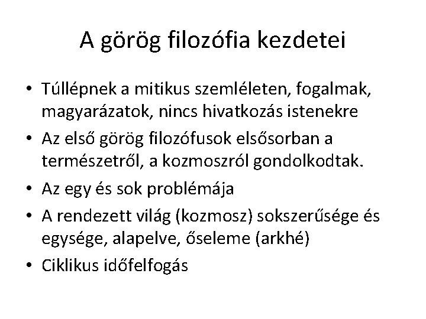
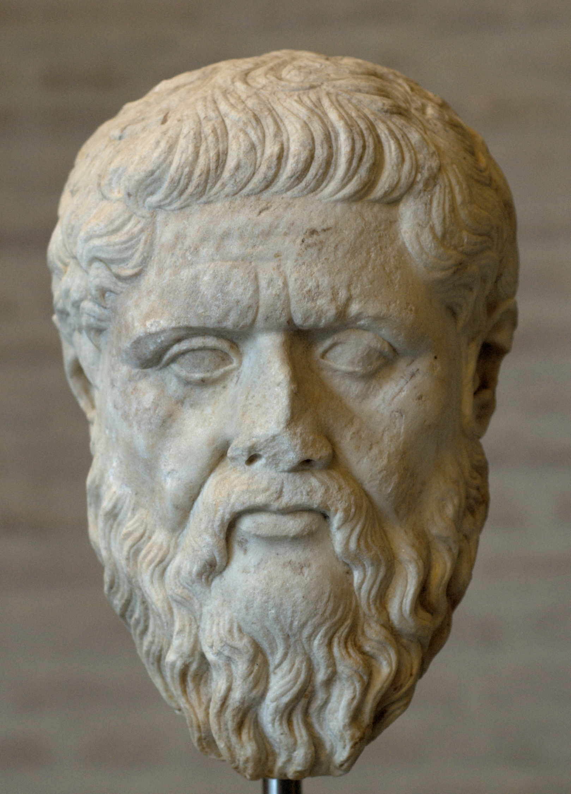
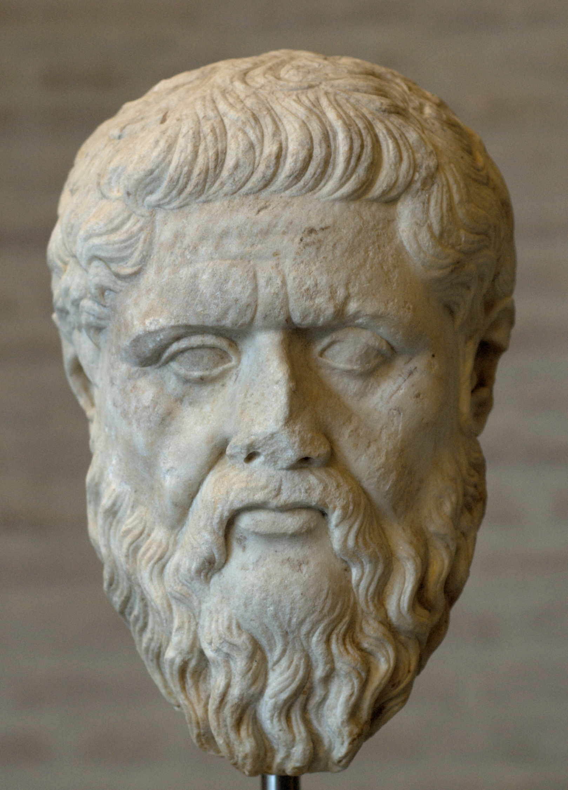

Görög
A görög tudomány filozófia [az arché]
- A görög föld földrajza, nevezetes városai
- Híres épületek görög földön
- A örög konyha
- A görög tudomány – történetírás
- szerzők
- A görög tudomány – orvostudomány
- A görög tudomány – filozófia [az arché]
- szerzők
- Dani
- Bence
- A görög tudomány – irodalomtudomány [líra,eposzok,tragédia]
- A görög tudomány – természettudomány [matematika, fizika….]
- A görög hítvilág
- A görög sport – az olimpia
- Egyéb. Turista voltam görög földön.

A görög filozófia előzményei
A nyugati világban a filozófia először az orfikus tanokban és Hésziodosz műveiben jelent meg. Ezek a filozófiák még nagyon közel álltak a mítosz világához, és szemléletüket tekintve archaikus jellegűek. Hésziodosz a Kr. e. 7. század elején élt. Két munkája is fennmaradt, a Munkák és napok és a Theogonia. Hésziodosz a már meglévő mitológiai anyagot rendezte át, külön figyelmet szentelve Zeusz tekintélyének és nagyságának leírására. A jelenlegi világot igyekezett visszavezetni minimális számú primér elemre, amely primér elemekből aztán az egymást követő generációk során át levezethető a világ általunk tapasztalható változatossága. Az orfikus hiedelmek megjelenése körülbelül a Kr. e. 3. századra tehető. Az orphikusok, mint különálló csoport megjelenésének idejében nem lehetünk biztosak. Az egyik nézet szerint, amit Guthrie képvisel (The Greeks and their Gods, London, 1950, XI. fejezet), az orphikus tanítás már a Kr. e. 6. század folyamán szent könyvekben le lett fektetve.

Thalész
Athéni felvilágosodás
Az athéni Szókratésszel kezdődik meg a görög filozófia klasszikus korszaka, ő számít a filozófiai etika megalapozójának. Filozófiájának középpontja a jó (agathon) természetének meghatározása és az erény (areté) vizsgálata. Szókratész a jót és a rosszat vizsgálta, hogy a gyakorlatban azt alkalmazni lehessen. Szókratész saját filozófiáját mint maieutikát (bábáskodást) jellemzi: nem állít ismeretet, hanem elősegíti a beszélgetőtársát abban, hogy saját magától találjon rá. Szókratész tanítványa, Platón (Kr. e. 427–347) a nyugati filozófia egyik legnagyobb hatású gondolkodója. Filozófiája a metafizikától az államelméletig számos területet érint. Tanításai a kései antikvitásban, a középkorban és a reneszánszban egyaránt meghatározóak voltak, de a mai napig viták alapját képezik. Megalapította az egészen a Kr. u. 6. századig fennálló Akadémiát, műveit leggyakrabban dialógusformában írta. Talán leghíresebb gondolata az ideatan.
 
Az infórmációt innen szereztük

Az infórmációt innen szereztük